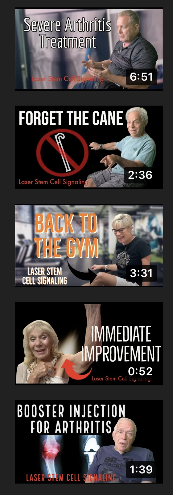
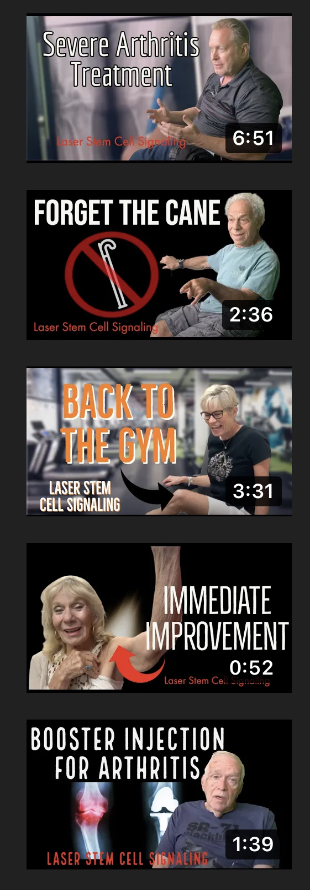

David Yoo
Being born in Korea, English was not my first language. My parents are both Korean, but my Dad was born in the States, giving me an advantage when learning English. As a kid I would try to “read” picture books in English, but that mostly consisted of imitating sounds my Dad made when he spoke the language. I would eventually be forced to familiarize myself in the language when my family moved to California, and practiced by talking to my neighbors and friends since I was rather outgoing, despite the language barrier. I first started to have problems in the first grade. Because I was still learning the language and had difficulty reading/writing, I was put in a different reading group than most of the other kids to learn at a slower pace so I could understand. By the end of second grade, I had become a proficient enough reader and writer to be put back in the normal classes with everyone else.
All throughout elementary school, there were certain books that helped me become more of a creative and efficient writer/thinker. I read books like The Magic Treehouse, Diary of a Wimpy Kid, Captain Underpants, etc. Later on I started to read more advanced books (without pictures!) such as the Percy Jackson and Harry Potter series. These books inspired me when writing, and I had enjoyed making stories and coming up with adventures when writing. When we were given assignments that allowed us to be as creative as possible, I was excited to see what I could come up with. However, this love for reading and writing died down once my carefree childhood days came to a close, and I had entered a new challenge: middle school.
Middle school challenged me to a whole different level as a writer and critical thinker. With the introduction of the MLA format and five-paragraph essays, we were forced to write more seriously through rigorous exercises. We used the same format and same way of thinking for nearly every assignment, and my creativity and love for writing slowly faded away. I also did not have a need for reading books in my free time, since I could be playing video games or doing work instead, and reading just felt like more work for no reason. While middle school was mostly filled with bad memories and getting used to doing actual work, it was there for a reason. All those boring and difficult assignments helped me prepare me for high school, and have the right skill sets and tools to help me succeed later on in life. However, I still had difficulty getting through assignments, leading me to start high school in a regular English class, and a strong dislike for reading and writing.
I cannot recall anything important I had learned in my freshman year, but I did pass English with an easy A since it was just a normal class. However it did help me get used to being a more sophisticated writer, and decreased my stress from writing all those essays. Although at first my teacher did not recommend me to take AP Lang for my sophomore year, I was able to get in the class, seeing that I had ended the year with an A+, and an almost perfect score on my final exam. This would push me to enter my greatest challenge as a writer yet: AP Lang. In my sophomore year, this class would be by far my most difficult class, but also arguably my most helpful one. All the concepts we learned and the different types of essays we could write had expanded my view of literature and the art of writing an essay. While it was difficult and stressful, going through these challenges with my friends helped me become a much more proficient writer than I was before, and gave me the experience of what an AP class was.
These experiences I had in my previous schools and classes helped me become the reader and writer I am today. Although my love for reading and writing has gone away, I know that the tools and thought processes I learned throughout the years will be very beneficial to me in the long run.
Experience
Developer
• Publicity and social media advertisement for private clinics
• Teaching experience with younger students
• Clothing design and advertisement
Education
UC Riverside
Portfolio




